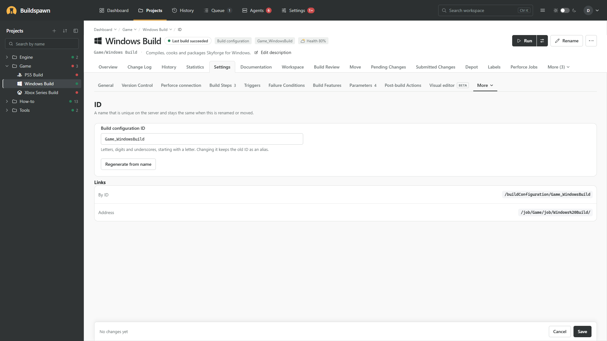

IDs and the parent-ID prefix
Every project, build configuration and template has an ID that stays the same when you rename or move it.
What an ID is
The ID is a name that is unique on the server. Dependencies, parameters such as dep.<id>.<name>, links and settings refer to it. A rename or a move never breaks them.
How it is made
On the New Item page the ID is made from the ID of the project the item goes in, an underscore and the name, until you edit it. A build configuration Windows Build in the project with the ID Game gets Game_WindowsBuild. This is the parent-ID prefix.
| Rule | Detail |
|---|---|
| Characters | Letters, digits and underscores only. |
| Start | A letter. |
| Length | Up to 225 characters. |
| Unique | Another item may not use it. The page checks as you type and says is free. |
| Edited by hand | If you change it, it no longer follows the name. |
Change an ID

- Open the build configuration, then Settings › More › ID. For a project open Settings › ID.
- Type the new ID, or click Regenerate from name.
- Click Save.
The old ID keeps working as an alias. Aliases are listed on the page. Remove one to let another item take that ID. Links that used the alias then stop working.
Where it shows
- In the header of the page, as a chip next to the type.
- In the address
/buildConfiguration/<id>, which goes to the item whatever its place. - In dependency settings and in
dep.andreverse.dep.parameters.
A worked example
The studio moves Windows Build from Game to Game/Main. Its ID stays Game_WindowsBuild, so the dependency in Release Build keeps working.
Problems and fixes
| Problem | What to do |
|---|---|
| The ID is not valid | Remove spaces and symbols. Start with a letter. |
| The ID is not free | Choose another. Or remove the alias that holds it. |
| I changed the ID and a link broke | Use the new ID. The old one works as an alias unless you removed it. |